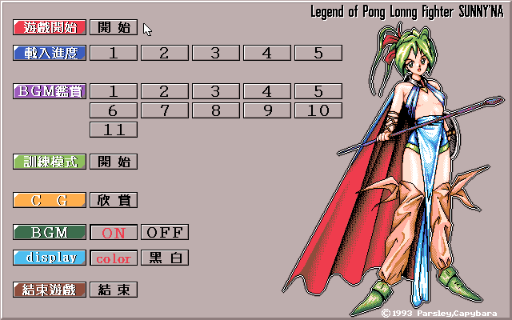
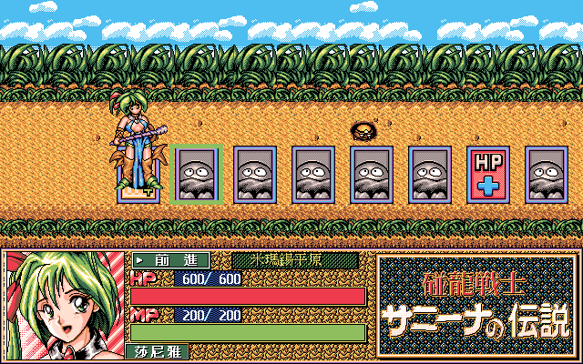
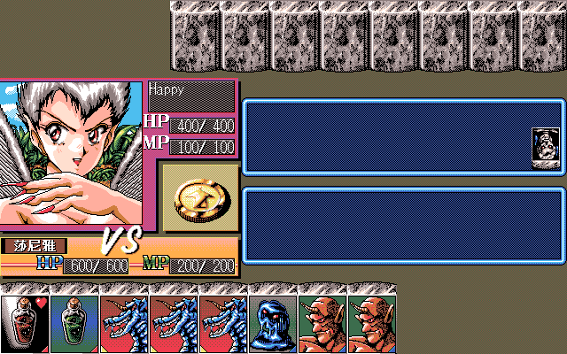

名稱：碰龍美戰士 (Legend of Pong Long Fighter Sunnyna，中文版)
簡介：天堂鳥1995年出品的18禁益智遊戲，劇情描寫魔法師莎尼雅打敗作亂的雪爾維亞及其
四名手下的事蹟。本遊戲可說是大富翁、麻將和角色扮演遊戲的綜合體，在前往魔王
的城堡時，採用類似大富翁的隨機選步前進方式，而遭遇敵人時，則採用類似麻將的
作戰方式分勝負。在作戰勝利後，也有類似角色扮演的升級制，以提升生命力與魔法
力。只是遊戲在這三方面的製作水準，以及色情圖片的美工上，都是屬於二流水準，
因此這個遊戲雖然新穎，但卻不怎麼好玩。



保護：顏色密碼，破解碼：
SUNNY.EXE
88 46 F4 8A 46 F4
8A -- EC 88 -- --
操作：
滑鼠左鍵 = 前進／停止／摸牌／棄牌
滑鼠右鍵 = 功能選單
說明：
打麻將時，只要三組三張相同的牌即算胡牌。下面為各選單的功能：
Attack = 胡牌
Tri = 碰牌
Reach = 聽牌
Sea Through = 看對方的牌
Miracle Pass = 安全出牌
God Grace = 立刻自摸
胡牌時若為清一色，則有特殊效果。其中九條龍攻擊力最強，九瓶紅藥水可大幅補充生命力，
九瓶綠藥水可大幅補充法力。其他加成效果的，只有天胡、門清自摸、以及聽牌加賭等三項
而已。